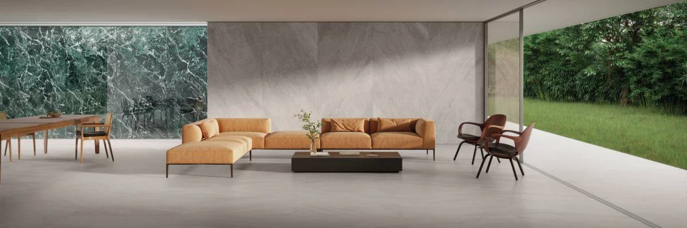
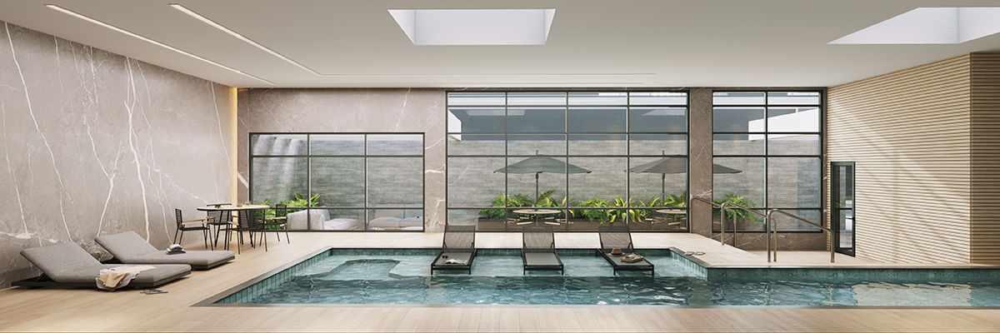

- 
- 

Chegamos aqui! Pedimos licença para nos apresentar
Somos a Parápisos E viemos te contar A história da nossa marca que é um raio uma estrela um lugar
Nossa marca foi inspirada no estilo Raio-que-o-parta e antes que pense que é xingamento olha que lindo esse movimento
Lá no Pará, norte do Brasil Década de 50 e 60 a camada popular criou Sua própria arquitetura do lugar E com azulejos quadradinhos todos coloridinhos colavam nas suas fachadas Sua própria arte Algumas pessoas com preconceito colocaram logo defeito
o defeito virou estrondo dos azulejos quebrados que pareciam atingidos por um Trovão e o trovão era na verdade a voz do povão
o Raio-que-o-parta surge como voz forte, e como dizem lá no Pará: não venha forte que Sou do Norte!
E aqui chegamos em Petrolandia Pedindo licença chegando de mansinho feito onça e também passarinho trazendo pisos construindo história, então guarda na memoria
Aqui tem Material de construção pra tudo que você precisar Tem pisos, porcelanato, revestimento Passa aqui pra um cafezinho e faça seu orçamento
Venha nos conhecer aqui te damos confiança e Se precisar até asa afinal de contas na Parápisos Nossa estrela é sua casa